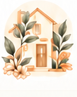

LAYANAN PADMA
Layanan yang Jelas. Format yang Fleksibel.
Pilih sesi sesuai fase, cara belajar, dan kebutuhan keluarga Anda.
PADMA Learn & LiveSeluruh Indonesia
PADMA HomeMalang Raya & Batu
DAFTAR LAYANAN & FORMAT
Pilih Layanan dan Format yang Sesuai
SEDANG HAMIL
Garbha ReliefPijat relaksasi selama hamil
—
—
Garbha FlowYoga & gerak untuk ibu hamil
—
Garbha Partner LabKelas pijat oleh pasangan
—
SETELAH MELAHIRKAN
Purnama RestPijat relaksasi setelah melahirkan
—
—
Lactation HeroPersiapan & praktik menyusui
Shishu Nurturing AcademyBelajar merawat bayi baru lahir
Shishu Parents TouchSentuhan orang tua untuk bayi
—
KEMBALI BEKERJA
Return to WorkPersiapan menyusui saat kembali kerja
Harga, jadwal, dan promo: tanya via WhatsApp atau lihat Highlight Instagram @padmawellness.id.
Tentang Format Layanan
PADMA Learn
E-learning, eBook, dan online workshop. Dapat langsung dipilih.
PADMA Live
Video call interaktif dengan praktik dan koreksi langsung. Dapat langsung dipilih.

PADMA Home
Kunjungan ke rumah di Malang Raya & Batu. Diawali cek kesiapan sesi 2 menit.
Nurturing in Every Stage of Life